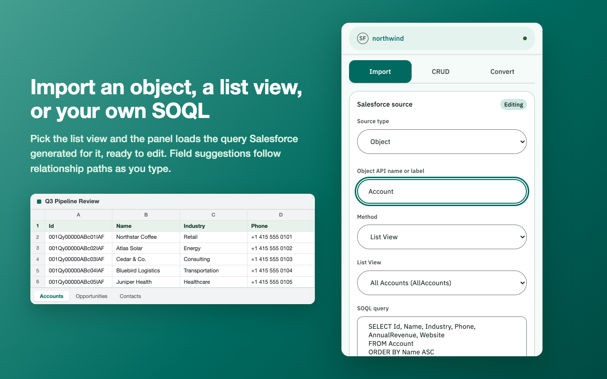
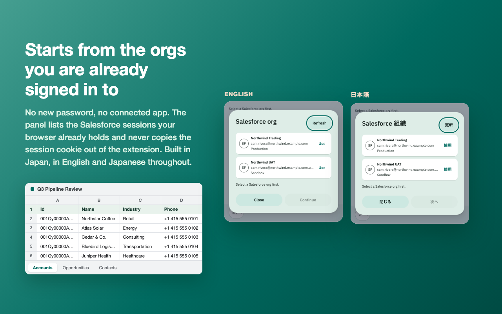
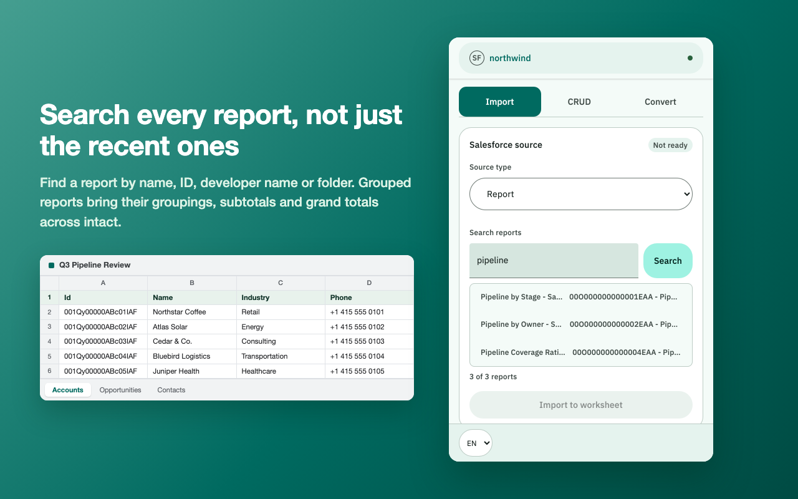
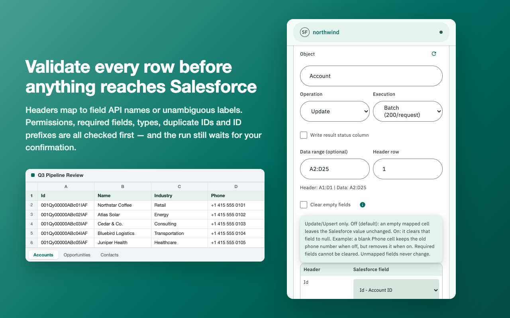
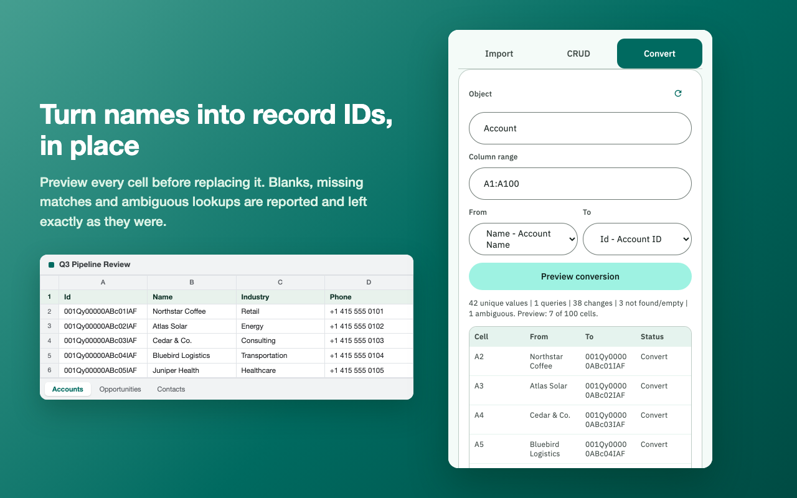

Objects and list views
Pick any Salesforce object and import from a List View, with inline field suggestions that include relationship paths.
A side panel for the Google Sheets™ spreadsheet you already have open, connected to the Salesforce organization you are already signed in to. Import objects, list views, your own SOQL, and reports into a worksheet, then send confirmed record changes back. There is no developer-operated backend and no Apps Script to install.
SheetConnect is an independent product and is not affiliated with, endorsed by, or sponsored by Salesforce or Google.

Pick any Salesforce object and import from a List View, with inline field suggestions that include relationship paths.
Write the query yourself when a list view is not the right shape, and import its results into the worksheet you choose.
Search reports by ID, name, developer name, or folder, then import the one you need.
Groupings, aggregates, subtotals, and grand totals import intact. Optional detail rows arrive for that run without changing the report in Salesforce.
Object imports follow every result page, so a large query is not capped at its first batch.
The worksheet acts as the input table. An optional data range limits the run to exactly the rows and columns you select.
Headers map to field API names or unambiguous labels, and permissions, required fields, types, duplicate headers, and ID prefixes are all checked first.
Run sequential batches of up to 200 records, or a single Bulk API 2.0 job with downloadable result files.
Replace a column's values using Salesforce lookups — names into record IDs — after previewing every cell, without touching your saved import mapping.
The whole panel is available in both, using Salesforce's own Japanese terminology. A Japanese browser opens in Japanese; the selector in the panel header overrides it either way.
Choose the org, the worksheet, the source or operation, and the data range that the run is allowed to touch.
Review the header mapping and the record, error, and request counts before the run is offered.
Every run names the org, object, worksheet, operation, and record count, and waits for you.
The optional status column is inserted after your data, shifting later columns right rather than overwriting them, and it is off by default.




Every frame is the shipping side panel driven through its own code paths. The records are invented; no live Salesforce org, Google account, or customer data appears in them.
Installing grants Salesforce access only. Google access is a separate, later decision.
cookies: reads the existing Salesforce sid cookie locally to list the orgs you are signed in to and authenticate the API calls you request.identity: obtains a Chrome-managed Google OAuth token for the Google Sheets API, only after you select Connect Google. The only Google OAuth scope requested is https://www.googleapis.com/auth/drive.file, which reaches only the spreadsheets you hand over yourself through Google’s own file picker.sidePanel: presents the interface beside the open spreadsheet.storage: remembers the selected org, the per-org and per-worksheet source mapping (80 most recent), Bulk API job records (20 most recent, with no field values), and SHA-256 fingerprints of sessions you chose to hide (at most 50).tabs: enables the toolbar action only on Google Sheets tabs, and confirms before every read or write that the worksheet is still the one open in the active tab.Version 0.7.0 is published on the Chrome Web Store and anyone can install it. Every released build passes its unit tests, source validation, and archive validation before it is packaged. Sign-in, import, and Salesforce record updates have been run end to end against a real Salesforce organization and a real Google account.
The Google OAuth consent screen is In production, and Google’s verification of the requested scope is still open. In production is the OAuth publishing status; it does not by itself mean the app is Google-verified. Until verification completes you will see Google’s unverified-app screen when you connect your Google account, and the number of accounts that can authorize is capped. The privacy policy is publicly available.
The Google authorization has been narrowed from https://www.googleapis.com/auth/spreadsheets, which reached every spreadsheet in your Drive, to https://www.googleapis.com/auth/drive.file, which reaches only the spreadsheets you hand over yourself through Google’s own file picker. That narrowing shipped: drive.file is the only scope the released extension requests. It is a reduction in what the extension can see, not an addition.
This product was called DinaConnect during development and was renamed to SheetConnect before release. The draft store item was created under the old name; uploading the package renames it in place, because the manifest key pins the extension ID.